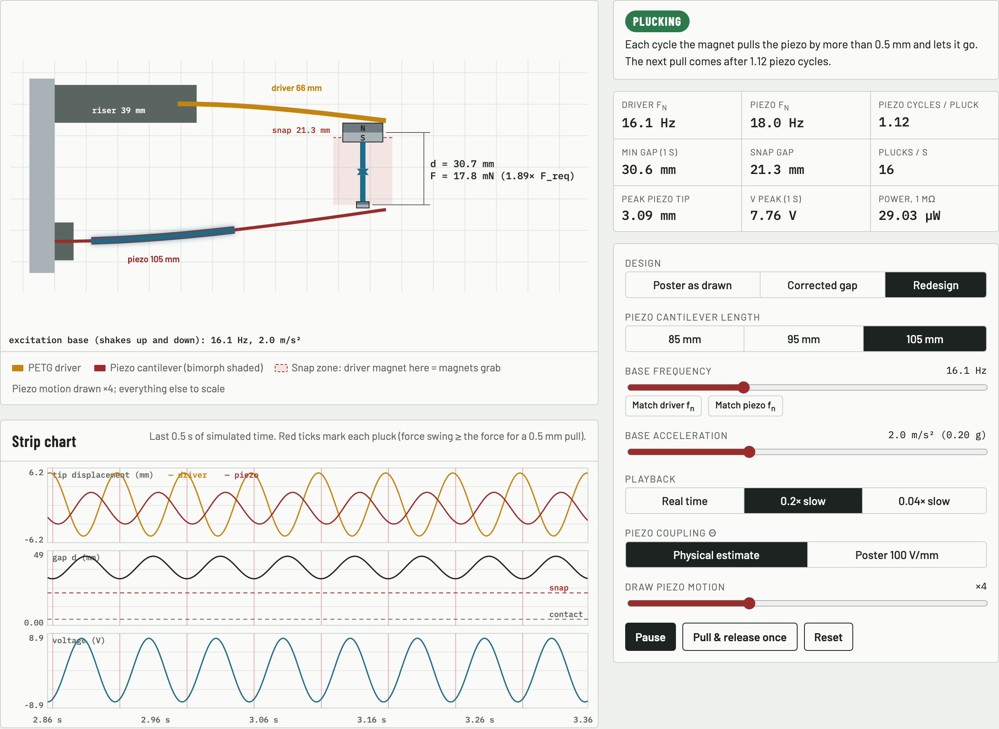

Most Plausible Solution: Written Description and Digital Model
Our most plausible solution is MagPluck (Solution #3). It is a small, passive harvester that bolts onto a vibrating surface and turns slow vibration into electricity with a magnetic pluck, so no parts ever strike or rub. Our digital model is an interactive computer simulation our team built, the Plucked Harvester Bench (Figure J). It shows the harvester sideways, the way it would sit on a car panel, and calculates the motion of both beams, the magnetic force between them, and the piezo circuit, using the same equations and numbers as our design calculations. Our submitted video shows it running.

1234
Figure J: Our digital model running the 105 mm version at 16.1 Hz and 2 m/s². The numbers mark the four parts described at right.Screenshot of our team's simulation. A video walkthrough is submitted with this portfolio.
Parts of the Model
1Side view: Both beams to scale, lying sideways from the mounting wall: the PETG driver (gold) above, the piezo beam with its PZT bimorph (red) below, and both magnets. The shaded box is the snap zone; the live gap and force are shown beside the tips.
2Live readouts: Natural frequencies, closest gap, snap distance, plucks per second, tip motion, peak voltage, and power into a 1 MΩ load. A tag says if it is plucking, not plucking, or stuck.
3Controls: Pick the design (poster as drawn, corrected gap, or redesign), the piezo beam length (85, 95, or 105 mm), base frequency (5–40 Hz), shaking strength (0–6 m/s²), playback speed, and piezo coupling. "Pull & release once" shows one pluck.
4Strip chart: Scrolling graphs of tip motion, magnet gap, and voltage. Red ticks mark each pluck.
How It Works
Shake: The base shakes with the car. The soft driver beam, tuned to 16.1 Hz, swings several millimeters.
Pull: The driver's large magnet pulls the piezo beam's small magnet and bends the beam.
Release: As the driver swings away, the pull drops with distance⁴, so the piezo beam is let go.
Ring: The piezo beam rings at its own 18 Hz, straining the PZT.
Power: A rectifier and capacitor store the energy for a wireless sensor.